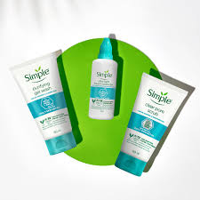
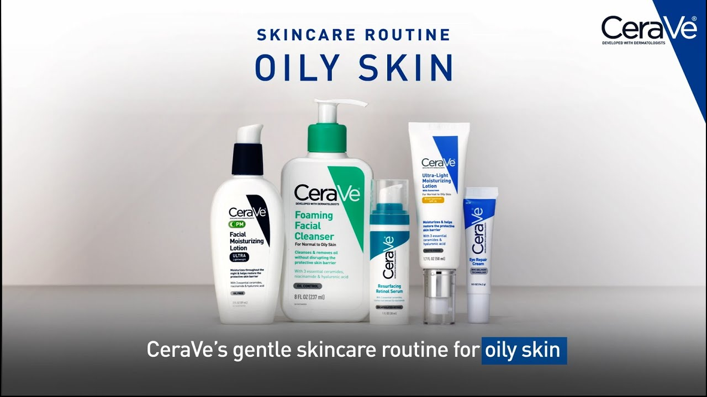
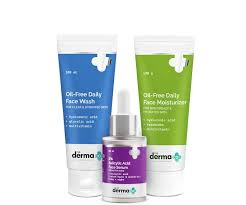

1. Do Cleanse Twice Daily: Use a gentle, foaming cleanser to remove excess oil and impurities without stripping your skin.
2. Do Use Non-Comedogenic Products: Choose skincare and makeup products labeled as non-comedogenic to avoid clogging pores.
3. Do Exfoliate Regularly: Exfoliate with a BHA (beta hydroxy acid) exfoliant, such as salicylic acid, to keep pores clear and prevent breakouts.
4. Do Use Oil-Free Moisturizers: Even oily skin needs hydration. Opt for lightweight, oil-free moisturizers to keep your skin balanced.
5. Apply Sunscreen Daily: Protect your skin from UV damage with a non-comedogenic, oil-free sunscreen.
6. Do Use Clay Masks: Incorporate clay masks into your routine once a week to absorb excess oil and purify your skin.
1. Don’t Over-Cleanse: Over-washing can strip your skin of natural oils, prompting it to produce even more oil. Stick to cleansing twice daily.
2. Don’t Skip Moisturizer: Skipping moisturizer can lead to dehydrated skin, causing your skin to produce more oil to compensate.
3. Don’t Use Harsh Products: Avoid harsh, alcohol-based products that can irritate and dry out your skin, leading to increased oil production.
4. Don’t Pick or Pop Pimples: Picking at your skin can lead to scarring and infection. Use targeted treatments to manage breakouts.
5. Don’t Neglect Your Diet: A diet high in sugar and processed foods can exacerbate oily skin. Eat a balanced diet rich in fruits, vegetables, and lean proteins.
Salicylic Acid: Helps exfoliate and unclog pores, reducing breakouts.
Niacinamide: Regulates sebum production and soothes inflammation.
Benzoyl Peroxide: Treats acne by killing bacteria and reducing oil production.
Tea Tree Oil: A natural antiseptic that helps control oil and reduce acne.
Witch Hazel: Acts as a natural astringent to tighten pores and control oil.
Cleanser: Use a gentle foaming cleanser.
Toner: Apply a toner with salicylic acid.
Serum: Use a niacinamide serum to control oil.
Moisturizer: Choose a lightweight, oil-free moisturizer.
Sunscreen: Finish with a non-comedogenic, oil-free sunscreen.
Cleanser: Cleanse with the same gentle foaming cleanser.
Toner: Apply the toner with salicylic acid.
Treatment: Use a benzoyl peroxide or retinol treatment to prevent breakouts.
Moisturizer: Use a lightweight, oil-free moisturizer.


